Next: Including Phonons and Crystal-Field Up: Including Quadrupolar and Higher Previous: Option indexexchange in order Contents Index
The programs mcphas and mcdisp are run completely the same way as usual, only the output files contain also information about the (thermal) expectation values of 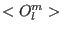 dependent on temperature and magnetic field. Using the module so1ion the notation 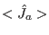,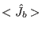,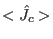, 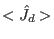, 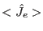, etc. correspond to 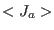, 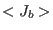, 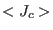, 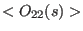, 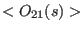,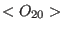,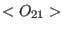,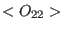,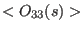, ... respectively. Note that by the higher order interactions not only the static properties are changed, but also the dispersion of the magnetic excitations is influenced.
The directory examples/gdru2si2 contains an example of a simulation of biquadratic (i.e. isotropic quadrupolar) interactions leading to an improved description of magnetic susceptibility.
For DyCu the conversion
of the magnetic axis due to quadrupolar exchange has been calculated according to the model
[8]. The calculated quadrupolar phase diagram is shown in figure 15.
the conversion
of the magnetic axis due to quadrupolar exchange has been calculated according to the model
[8]. The calculated quadrupolar phase diagram is shown in figure 15.
|
|
When large quadrupolar interactions are present, the excitation spectrum is changed and
quadrupolar modes (orbitons) with a finite dispersion are expected.
These modes correspond to an cooperative oscillation of the quadrupolar moments such as shown
in figure 16.
The program mcdisp
is able to calculate this dispersion and the corresponding neutron scattering cross section as shown
in figure 17 for the case of PrCu .
.
|
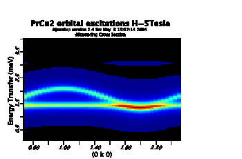
|